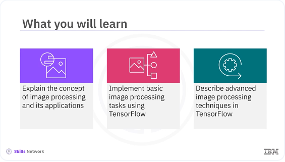
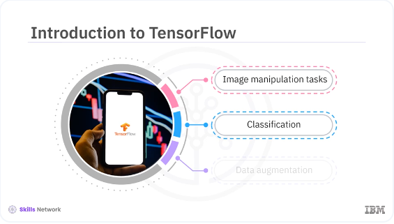
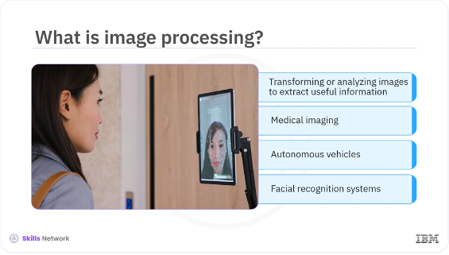
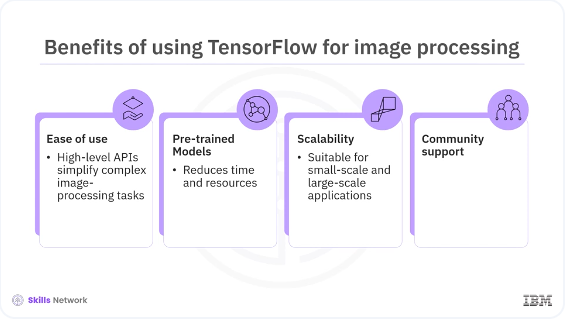

Tensorflow for Image Processing

Welcome to this video on image processing, using TensorFlow. After watching this video, you'll be able to: explain the concept of image processing and its applications, implement basic image processing tasks using TensorFlow, describe advanced image processing techniques in TensorFlow.

TensorFlow is a powerful library that enables various image manipulation tasks, including classification, data augmentation, and more advanced techniques. Image processing is an essential part of computer vision applications, and TensorFlow offers comprehensive tools to handle these tasks efficiently.

Image processing involves transforming or analyzing images to extract useful information. It is widely used in various applications such as medical imaging, autonomous vehicles, and facial recognition systems. TensorFlow provides robust capabilities for image processing, making it easier to develop and deploy computer vision models.

Using TensorFlow for image processing offers several benefits: Ease of use. TensorFlow's high level APIs simplified the implementation of complex image processing tasks. Pre-trained models: Access to a variety of pre-trained models reduces the time and computational resources required for training. Scalability: TensorFlow's ability to run on multiple platforms makes it suitable for both small scale and large scale applications. Community support: A large community of developers, and extensive documentation, provide valuable resources and support.
pyenv activate venv3.10.4
import tensorflow as tf
from tensorflow.keras.preprocessing.image import ImageDataGenerator, img_to_array, load_img
# Load and preprocess the image
img = load_img('/home/bbearce/Documents/code-journal/docs/journal_image.jpg', target_size=(224, 224))
img_array = img_to_array(img)
img_array = tf.expand_dims(img_array, 0) # Add batch dimension
# Display the original image
import matplotlib.pyplot as plt
plt.imshow(img)
plt.show()
Let's start with some basic image processing tasks using TensorFlow. You will load and pre-process an image, then apply a few common transformations.
datagen = ImageDataGenerator(
rotation_range=40,
width_shift_range=0.2,
height_shift_range=0.2,
shear_range=0.2,
zoom_range=0.2,
horizontal_flip=True,
fill_mode='nearest'
)
img = load_img('/home/bbearce/Documents/code-journal/docs/journal_image.jpg')
x = img_to_array(img)
x = x.reshape((1,) + x.shape)
i = 0
for batch in datagen.flow(x, batch_size=1):
plt.figure(i)
imgplot = plt.imshow(tf.keras.preprocessing.image.array_to_img(batch[0]))
i += 1
if i % 4 == 0:
break
plt.show()
In the example, this code loads the image and resizes it to 224 by 224 pixels. This code converts the image to a NumPy array. This code adds a batch dimension, which is necessary for model predictions. Data augmentation is a technique to increase the diversity of your training data by applying random transformations. This helps improve the robustness and performance of your models. In this example, the code configures the augmentation parameters such as rotation, shift, shear, zoom, and flip. This code generates batches of augmented images.
In this video you learned, TensorFlow is a powerful library that enables various image manipulation tasks, including classification, data augmentation, and more advanced techniques. Image processing involves transforming or analyzing images to extract useful information. It is widely used in various applications such as medical imaging, autonomous vehicles, and facial recognition systems. TensorFlow's high level APIs simplify the implementation of complex image processing tasks.